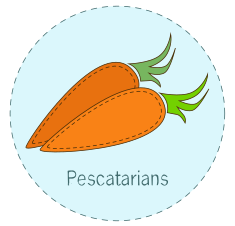

-

-
- 

[ wikipedia.org ]
Toronto is one of the top 10 large North American cities for vegans and vegetarians [peta.org]. Canada's largest city comes through for the hungry vegetarians of the Great White North. In Toronto you can try the raw vegan Pasta Bolognese at Rawlicious, or the eggplant in ginger sauce at Commensal.
Vegetarians in Toronto can enjoy dining out. Many restaurants, cafe, specialty bakeries, and even fast food serviced happy to effort amazing food.
Torontonians have a lot of choice on where to go for fresh local produce, natural cleaners, aluminum-free deodorant, animal-free soaps, and bulk lentils.
Eat local and organic. Buying locally grown food supports nearby farmers, and greatly reduces the energy and resources necessary to transport and store foods.